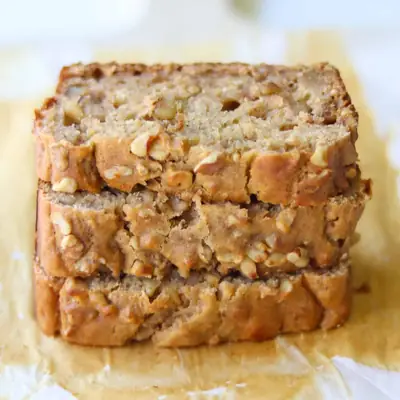

Date Walnut Cake

Ingredients
- 13-15 medjool dates, pitted (200g)
- 1 cup hot milk
- 2 eggs
- 1/4 cup Greek yogurt (58g)
- 1 teaspoon vanilla extract
- 1 1/4 cups self-rising flour (175g)
- 3/4 cup chopped walnuts, divided
Steps
- Soak the dates: Add pitted dates to a bowl and pour hot milk over them. Let them soak for at least 30 minutes, until softened.
- Preheat oven to 350°F.
- Blend: Transfer soaked dates and milk to a blender and blend until smooth.
- Mix wet ingredients: Pour the date mixture back into a bowl. Add eggs, yogurt, and vanilla. Whisk until combined.
- Add dry ingredients: Add flour over the wet mixture. Gently stir until just combined—don’t overmix! Fold in chopped walnuts.
- Bake: Pour the batter into a greased and lined 8-inch loaf pan (or use a cake pan if you’d like). Sprinkle extra walnuts on top. Bake for 30–35 minutes, or until a toothpick inserted in the center comes out clean.
Recipe by Min Kwon · Kidfriendly Meals, from MJ and Hungryman. Saved here for personal use; the original has the full notes, tips and photos. Open original